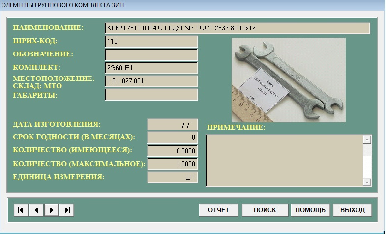
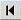
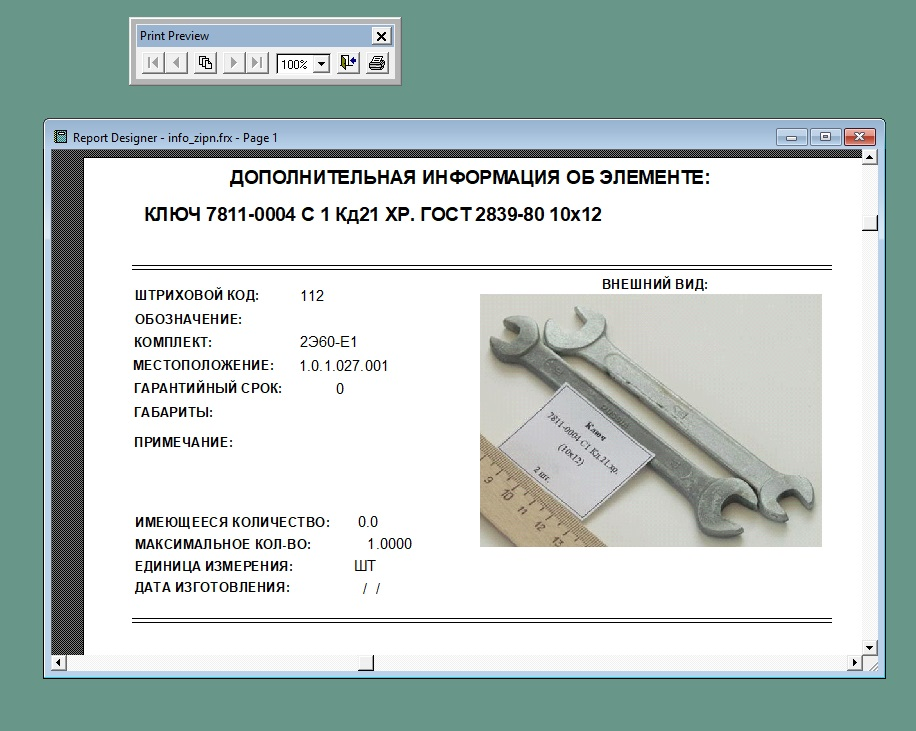

Подсистема "ЗИП"
В конец документа
Данный режим предоставляет возможность просмотра полной информации об элементах ЗИП-Г. Режим активизируется путем нажатия кнопки "ЗИП"
главное формы АСПУ. При входе в подсистему просмотра базы данных на экране отоброзится окно "Элементы группового комплекта ЗИП", внешний вид которого представлен на рисунке 1.

Рисунок 1 - Элементы ЗИП
В представленном окне отображается полная информация о текущем элементе ЗИП-Г
Назначение полей:
- "Наименование" - полное наименование элемента.
- "Штрих-код" - штриховой код элемента.
- "Обозначение" - обозначение элемента.
- "Комплект" - комплект, к которому он принадлежит.
- "Местоположение" - расположение элемента в формате С.С.Т.ЩЩЩ.ЯЯЯ. где:
- С - номер склада.
- С - номер стеллажа (шкаф).
- Т - номер тумбочки.
- ЩЩЩ - номер ящика.
- ЯЯЯ - номер ячейки.
- "Склад" - наименование склада, где находится элемент ЗИП.
- "Габариты" - габаритные размеры элемента.
- "Дата изготовления" - дата изготовления элемента.
- "Срок годности(в месяцах)" - гарантийный срок использования элемента в месяцах.
- "Количество(имеющееся)" - количество элементов, имеющееся в наличии.
- "Количество(максимальное)" - максимальное количество элементов, которое возможно разместить в машине.
- "Единицы измерения" - информация о единицах измерения (шт., м., кг.), которым измеряется количество элементов.
- "Примечание" - дополнительная информация об элементе (в том числе информация об особых условиях хранения).
Назначение кнопок:
-  - Для перехода к последнему элементу
 - Для перехода к предыдущему элементу
- Для перехода к предыдущему элементу- - Для перехода к следующему элементу
 - Для перехода к первому элементу
- Для перехода к первому элементу-
Кнопка "Отчет". При нажатии будет открыто окно для печати документа, печатная форма которого представлена на рисунке 2.

Рисунок 2 - Окно печати документа
-
Кнопка "Поиск".При нажатии открывается окно подсистемы "Поиск", которая предоставляется возможность быстрого перемещения к искомому элементу. Порядок работы описан в п.3.12(Подсистема поиск)
- Кнопка "Помощь". При нажатии откроется справка.
- Кнопка "Выход"". При нажатии осуществляется выход из под системы ЗИП.